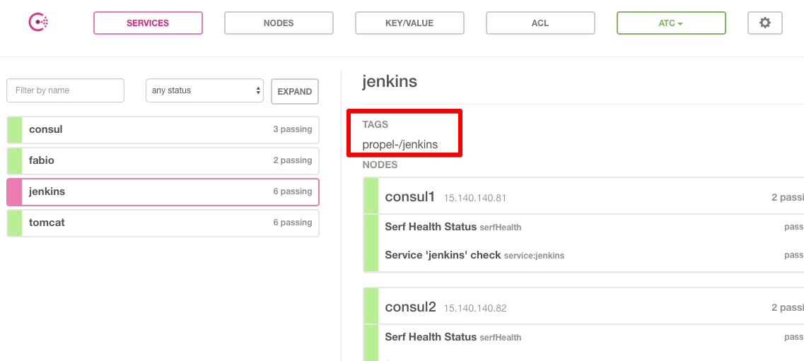
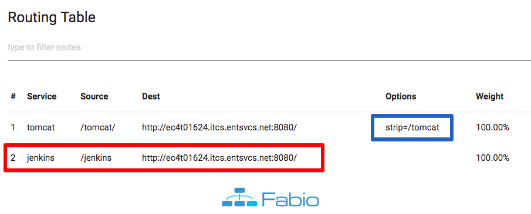
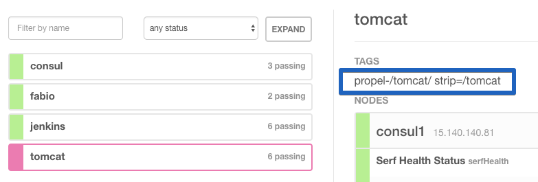

API Gateway by Fabio & Consul
Fabio is a HTTP router app written by Go language. It is Zero-configuration and simple to deploy. As official document mentioned, “It delivers 23.000 req/sec every day since Sep 2015 without problems”. It’s written and maintained by Frank Schroeder at eBay in Amsterdam.
Installation
Check Service Discover by Consul for installation of Consul
- Project pages
Fabio is a single file app. You just download the executable for your OS from its release page (https://github.com/fabiolb/fabio/releases) or use brew install fabio (MacOS) or go get github.com/fabiolb/fabio (Golang) to download to local. Rename it to fabio and add executing privilege.
Configuration
Fabio is zero-conf app. Which means you need almost no configuration. If you deploy it on the machine where you Consul deployed, it will automatically find service and register health check on it (Consul default localhost:8500)
Check the Fabio Wiki: https://github.com/fabiolb/fabio/wiki/Quickstart
How a registered service in Consul will be listed in Fabio routers?
Use a tag to identify a service in Consul. It will be recognized as a router.
e.g. the following is a service registry config file.
1 | { |
Note that “tags”: [“propel-/jekins”]. It means this is a service for Fabio. propel- is the prefix of tag to identify (which default is urlprefix-. You can change it by -registry.consul.tagprefix “propel-”.) /jekins means the endpoint to the service.
Visit http://myconsul:8500/ and check “service” tab, you will see registered service and the tags.

Visit http://myfabio:9998/, you will see the routers (with red rectangle marked)

At last, visit http://myfabio:9999/jenkins (/${tag}). You will be routed to http://ec4t01624.itcs.entsvcs.net:8080/jenkins .
How if I need to route to a host without a path
e.g. my tomcat server at http://ec4t01624.itcs.entsvcs.net:8080/
You need to set the tag with an option strip=/tomcat. It means the router will strip /tomcat from url path when routing. See the blue rectangle mark in the above 2nd screenshot (option column of tomcat). You will see it in Consul dashboard as below.

Visit http://myfabio:9999/tomcat/. It will route to http://ec4t01624.itcs.entsvcs.net:8080/ . The /tomcat in url path is removed. (note the last / is required. Check the source column in above 2nd screenshot.)
The service registry config file in Consul is:
1 | { |
Run
Just run $ fabio in terminal.
You may use –help to check the arguments. Or use a fabio.properties file as configuration.
To run with prefix, $ fabio -registry.consul.tagprefix propel-
Run as service
TODO
Other
- When I test with Apache Benchmark (ab), if the concurrent clients number sets to 500, it will occurs
socket too many open fileserror. You need to useulimited -n 65535to fix it.
- Check the log, you will see which service is captured.
– END –